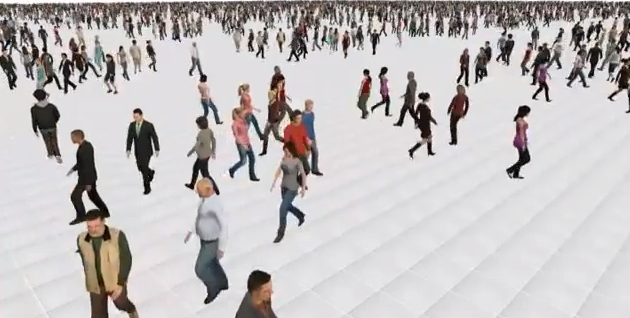

| Quand ? | Quoi ? | Détails |
|---|---|---|
| Depuis décembre 2010 | Ingénieur jeune diplômée dans l’équipe MIMETIC de l’Inria Rennes. Conception d’une plateforme logicielle permettant la simulation de foules grâce à des méthodes de peuplement massif. |  |
| Mars –Septembre 2010 | Stage dans le département R&D de Mac Guff Ligne, studio d’effets spéciaux et animation. Développement de structures permettant l’amélioration et l’accélération du rendu des images. (C/C++) | |